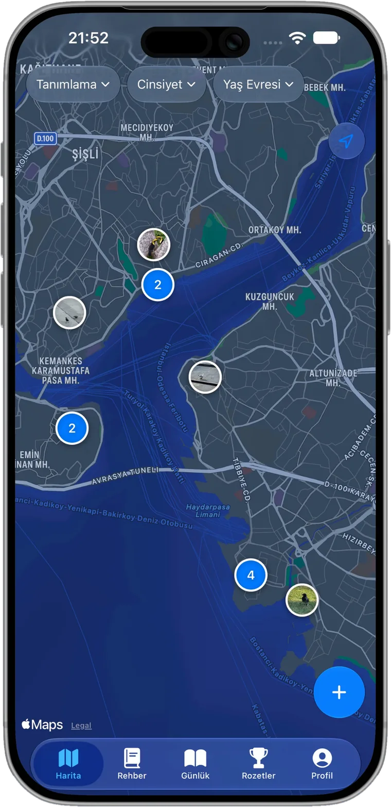
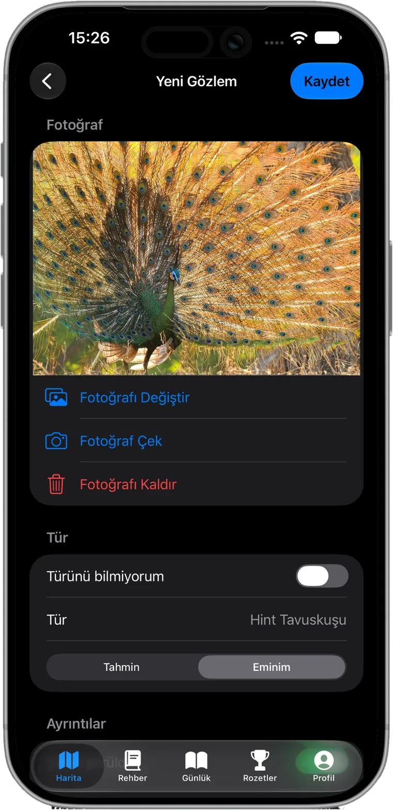
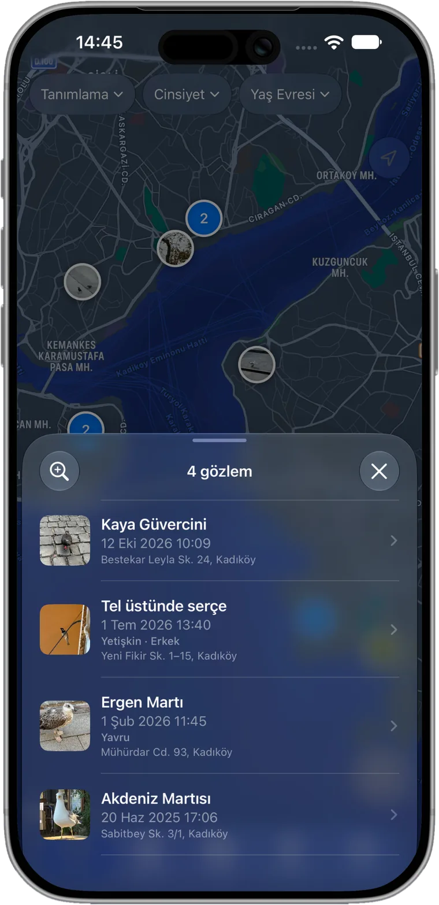
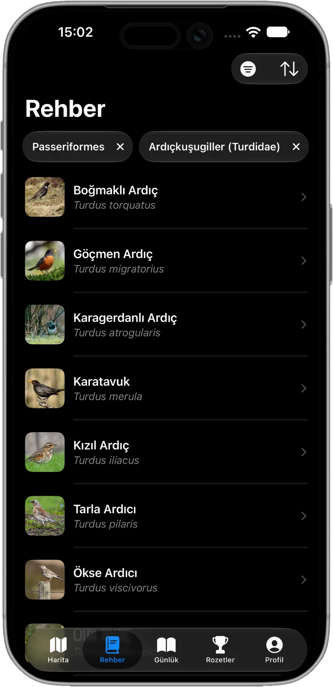
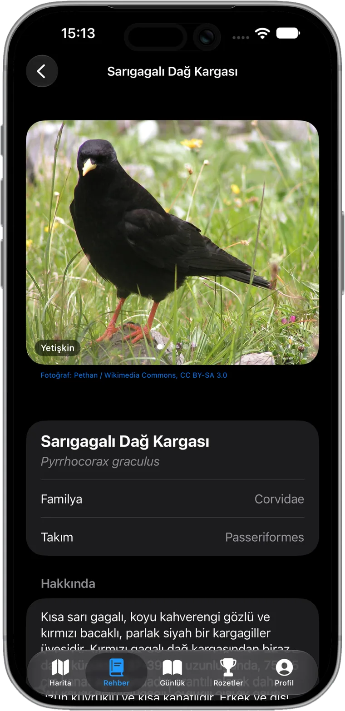
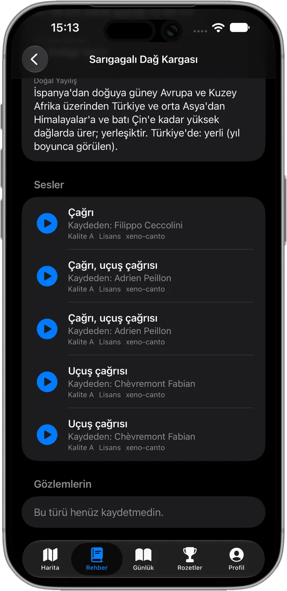
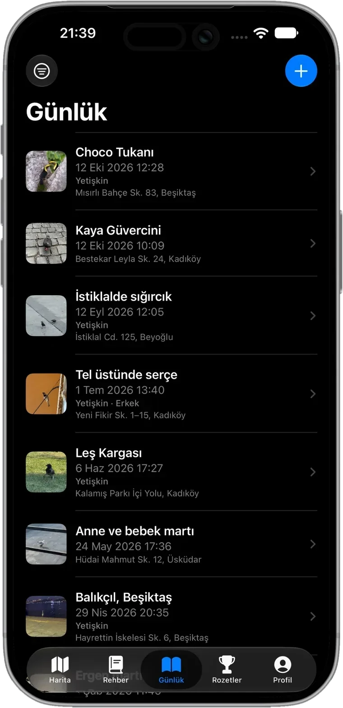
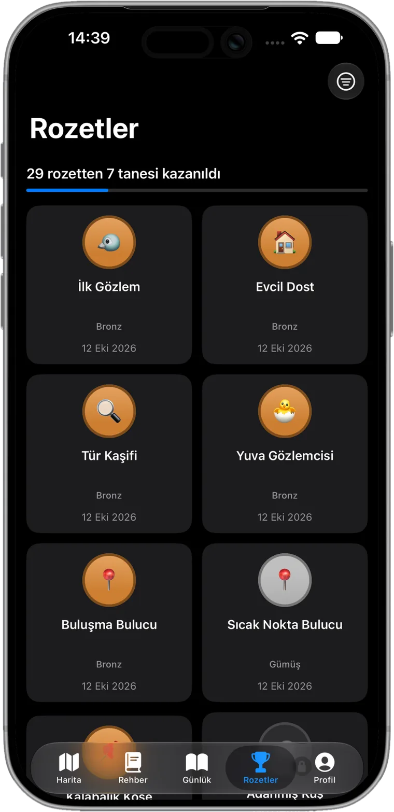
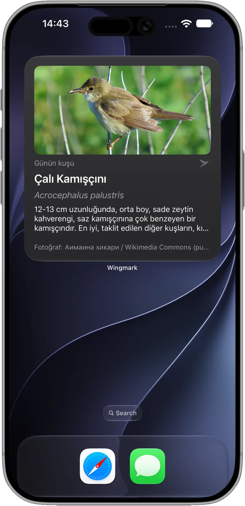

Kişisel kuş günlüğün
Gördüğün kuşları kaydet, türleri öğren, çağrılarını duy.
Yıllardır kuş izliyor da olsan, pencerenin dışındakileri yeni fark etmeye başlamış da olsan.
Yakında App Store’da

Birkaç dokunuşla kaydet
Kuşu, tarihi, yeri, bir not ve fotoğrafı ekle. Erkek mi dişi mi, yavru mu yetişkin mi, evcil mi, onu da işaretle.
Ne gördüğünden emin değil misin? Tahmin olarak kaydet ya da türü henüz bilmediğini belirt.

Nerede gördüğünü hatırla
Her gözlem fotoğrafıyla haritada duruyor. Bir kümeye dokununca o noktada gördüğün kuşlar açılır.
Haritayı tanımlamaya, cinsiyete ve yaş evresine göre süzerek aradığını bul.

Türleri tanı
Yerleşik rehberde 570’ten fazla tür var. Takım ve familyaya göre daralt ya da İngilizce veya Türkçe ara.
Her kuş için fotoğraflar, boyut, beslenme, yaşam alanı ve ne kadar nadir olduğu bulunur.


Kuşu sesinden tanı
xeno-canto’dan gerçek saha kayıtlarıyla çağrıları ve ötüşleri her tür sayfasında dinle.
Bir dahaki sefere ağaçlarda bir ses duyduğunda nereden başlayacağını bileceksin.

Düzenli bir günlük
Tüm gözlemlerin tek listede; her biri fotoğrafı, tarihi, yeri ve notlarıyla.
Bir kaydı açıp yeniden okuyabilir, düzenleyebilir ya da hemen yenisini ekleyebilirsin.

Rozet topla
Gözlem ve tür sayın arttıkça dönüm noktalarını topla. Bazıları gizli.

Ana Ekran’da Wingmark
Her gün rehberden yeni bir Günün Kuşu. Widget’lar son gözlemini ve kazanmaya en yakın olduğun rozeti de gösterir.

Sadece senin
- Gözlemlerini, notlarını ve fotoğraflarını yalnızca sen görürsün.
- Reklam yok, takip yok.
- Verilerini indirebilir ya da hesabını istediğin zaman Ayarlar’dan silebilirsin.
- İngilizce ve Türkçe kullanılabilir.
Kuşları sevenlerin hepsi için
İstanbul’da tek bir geliştirici tarafından yapıldı. Soru ya da fikir? Aşağıdaki adrese yaz.